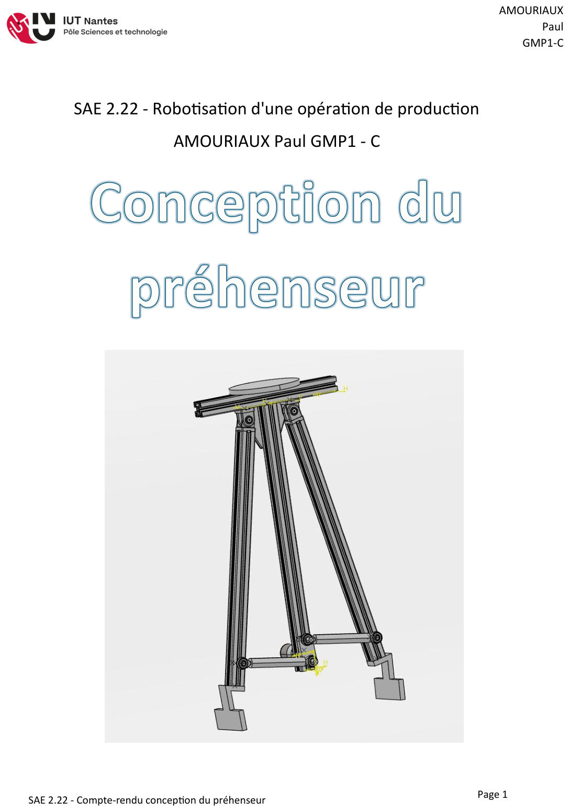
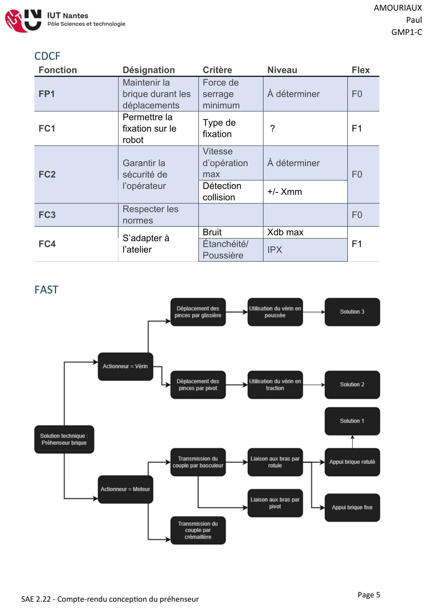
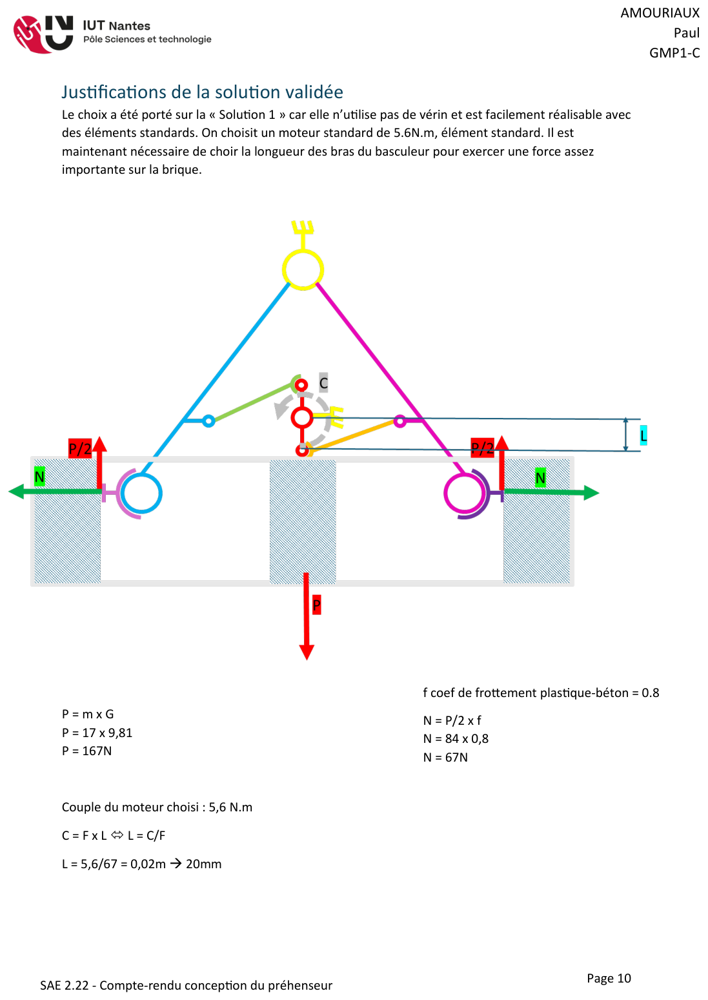
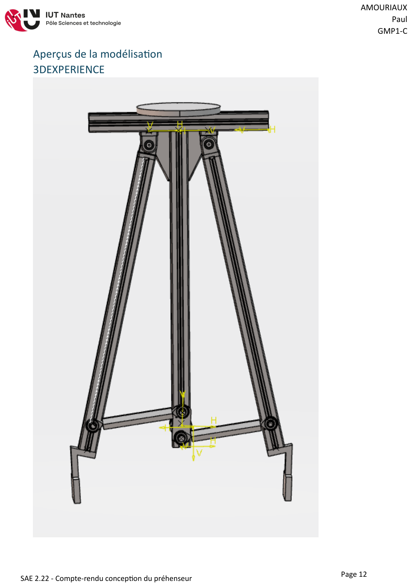
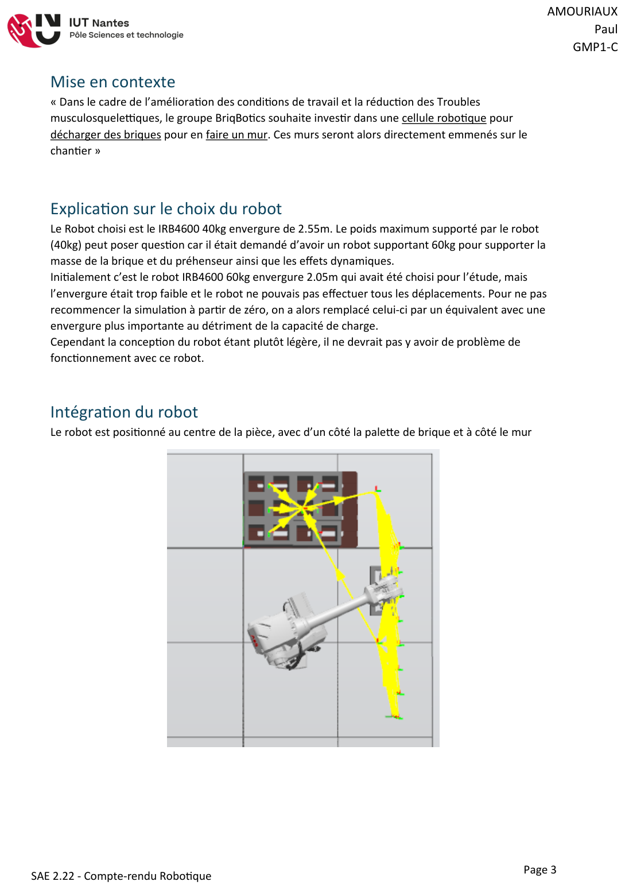
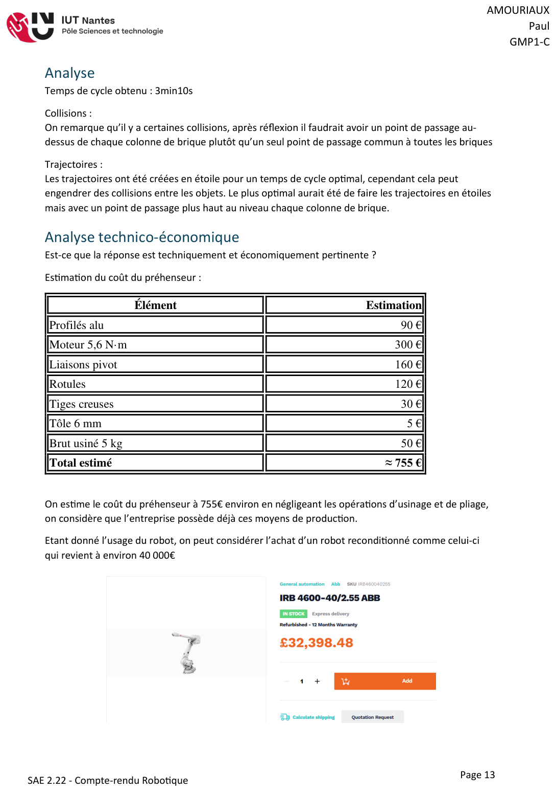

Contexte et objectif
Pour réduire les troubles musculosquelettiques sur les chantiers, l'entreprise fictive BriqBotics souhaite robotiser le déchargement de briques de 18 kg pour monter des murs. Ma mission couvrait toute la chaîne : concevoir le préhenseur monté en bout de bras du robot, puis simuler la cellule robotisée complète et juger de la pertinence technico-économique de la solution.
Conception du préhenseur
La démarche a démarré par une analyse fonctionnelle complète (bête à cornes, diagramme des interacteurs, CDCF, diagramme FAST), puis l'exploration de trois schémas cinématiques : basculeur motorisé, pince type « Schrader inversée » et solution à vérin.
La solution retenue utilise un moteur standard de 5,6 N·m qui transmet son couple aux bras via un basculeur — pas de vérin, donc pas de circuit pneumatique. Le dimensionnement (poids de la brique, coefficient de frottement plastique-béton de 0,8) a fixé la longueur des bras du basculeur à 20 mm. La structure est presque entièrement composée d'éléments standards : profilés Bosch, liaisons pivot et rotules du commerce, pattes de contact en tôle pliée, basculeur usinable sur fraiseuse CN 3 axes classique.




Simulation de la cellule robotisée
La cellule a été simulée sous RobotStudio avec un robot ABB IRB4600 (40 kg de charge, 2,55 m d'envergure), choisi après une première itération : le modèle 60 kg initialement retenu manquait d'envergure pour atteindre toutes les positions. La logique de station gère la prise et dépose de chaque brique (24 briques par mur), avec des trajectoires en étoile pour optimiser le temps de cycle, mesuré à 3 min 10 s. L'analyse des collisions a montré qu'un point de passage au-dessus de chaque colonne de briques améliorerait encore la fiabilité.



Analyse technico-économique
Le préhenseur revient à environ 755 € grâce aux éléments standards. En ajoutant un robot reconditionné (≈ 40 k€), l'intégration et la programmation, l'investissement total avoisine 100 k€, soit une rentabilité théorique en 3 ans face à un opérateur. Ma conclusion nuance cependant ce chiffre : les coûts d'installation et de déplacement entre chantiers rendent la solution pertinente surtout pour des chantiers volumineux — un regard critique sur la robotisation, au-delà du calcul brut.
Ce que ce projet m'a apporté
- Dérouler une démarche complète d'ingénierie : du besoin client au chiffrage, en passant par la cinématique.
- Concevoir avec les contraintes de coût et de fabrication (éléments standards, procédés simples).
- Programmer et analyser une cellule robotisée (trajectoires, collisions, temps de cycle).
- Évaluer la pertinence économique d'un investissement industriel.